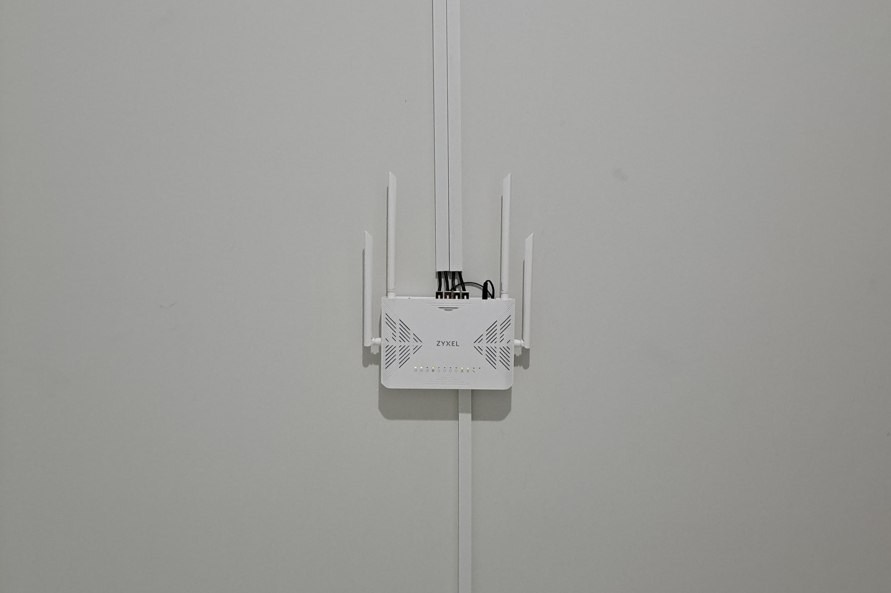
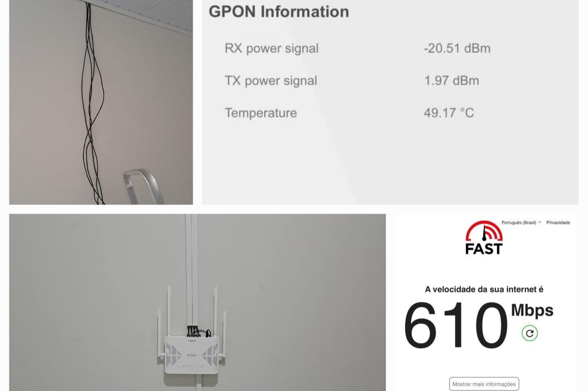

Projeto FTTH
Descrição do projeto
Este projeto consistiu na instalação e configuração de uma rede FTTH.
Foram realizadas as etapas de planejamento, lançamento de cabos ópticos, e configuração dos equipamentos.
Etapas do Projeto
Planejamento da rota de cabos.
Lançamento de cabos ópticos.
Instalação de cabos utp para os comodos da casa.
Configuração do modem.
Testes de sinal e certificação da rede.
← Voltar ao portfolio